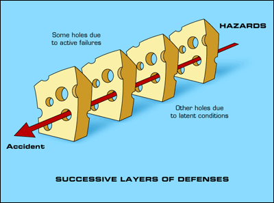

La progettazione centrata sull'utente
LM Space - Cittadella (PD)
22 Settembre 2015
Ing. Marco Dussin / @MarcoDussin
Qualcosa su di me

Front and back end engineer, UX consultant
http://www.duss.in
marco@duss.in
@marcodussin
it.linkedin.com/in/marcodussin/
Menu del giorno
Ergonomia
Ergonomia cognitiva
Sistemi interattivi e teoria degli errori
Lean UX

Henry Dreyfuss, Model 302 Telephone, 1937

Henry Dreyfuss, Model 500 Telephone, 1953
Henry Dreyfuss, Princess Telephone, 1959
Ergonomia
Henry Dreyfuss, The measure of man
Il termine "Ergonomia" è stato usato per la prima volta da Wojciech Jastrzębowski in un giornale polacco nel 1857
Ergonomia: dal greco érgon (lavoro) e ńomos (regola, legge)
Nel 1949 lo psicologo K. F. H. Murrell diede al termine il significato attuale:
...è quella scienza che si occupa dell'interazione tra gli elementi di un sistema (umani e d'altro tipo) e la funzione per cui vengono progettati (nonché la teoria, i principi, i dati e i metodi che vengono applicati nella progettazione), allo scopo di migliorare la soddisfazione dell'utente e l'insieme delle prestazioni del sistemaI.E.A. (International Ergonomics Association)
Science Finds, Industry Applies, Man Conforms (La scienza scopre. L'industria applica. L'uomo si adegua)Motto della Chicago World's Fair del 1933
Ergonomia
cognitiva
L'ergonomia cognitiva ha come oggetto di studio l'interazione tra il sistema cognitivo umano e gli strumenti per l'elaborazione di informazione. La conoscenza prodotta da questo studio è utilizzata per supportare la progettazione di strumenti appropriati per i più svariati usi, dal lavoro, all'educazione, al divertimentoSocietà Europea di Ergonomia Cognitiva

Donald Norman: La caffettiera del masochista. Psicopatologia degli oggetti quotidiani, Giunti, 1988
I principi che un buon design dovrebbe seguire sono:
- fornire visibilità;
- fornire un buon mapping;
- fornire inviti e vincoli all'uso;
- fornire feedback;
- fornire consistenza;
- fornire un buon modello concettuale.
Fornire
visibilità
Esercizio: "la mia automobile"
Fornire visibilità (1)
Tutte le parti funzionali devono essere visibili e devono fornire il messaggio corretto su quello che si può fare
Fornire visibilità (2)
Le relazioni tra ciò che vogliamo fare e le parti dell'oggetto su cui agire devono essere evidenti.
Fornire visibilità (3)
Il numero delle funzioni disponibili non deve superare eccessivamente il numero dei comandi utilizzabili
 Homepage di Google.it
Homepage di Google.it
Fornire un buon
mapping

Esercizio: "i miei fornelli"
Fornire un buon mapping (1)
Mapping significa correlazione tra la configurazione dei comandi disponibili per un dato oggetto e la configurazione delle parti di tale oggetto in cui si manifestano i risultati prodotti

Fornire un buon mapping (2)
...senza obbligare l'utente a sforzi mnemonici o a procedere "per tentativi"
Powerseat di una Mercedes-Benz E320 BLUETEC del 2008
Fornire un buon mapping (3)
Bisogna prestare particolare attenzione ai modelli culturali consolidati degli utenti

Fornire
inviti e vincoli all’uso

Esercizio: "la mia porta"


Fornire inviti e vincoli all’uso (1)
- Inviti (affordance): sono proprietà concrete e reali dell'oggetto che invitano l'utente ad utilizzarlo in un certo modo
- Vincoli (constraints): sono proprietà concrete o funzionalità progettate in modo tale da vincolare l'utente ad un dato uso dell'oggetto

Forbice Professionale K-Active Taping
Fornire inviti e vincoli all’uso (2)
Vincoli e inviti possono essere fisici, semantici, culturali o logici

Fornire
feedback

Esercizio: "il mio interruttore della luce"
Fornire feedback (1)
Pemettere all'utente di capire immediatamente, in modo sincronizzato, quale conseguenza ha seguito la sua azione, perchè possa verificare se è stata effettuata secondo le sue aspettative.
Se l'azione non può essere percepita, sono buoni sostituti a tale percezione i suoni, i colori, i cambiamenti di forma negli oggetti...

Fornire
consistenza
Esercizio: "le carte da gioco"
Fornire consistenza (1)
Progettare interfacce affinchè permettano simili operazioni ed utilizzino comandi simili per compiere compiti simili.
Permette all'utente di trasferire velocemente la conoscenza già acquisita a nuovi contesti e concentrarsi quindi sulle operazioni di rilievo.
Può essere controproducente.
Fornire consistenza (2)
Ci sono 4 tipi di consistenza:
- estetica (es: riconoscere una "Mercedes" da una "BMW")
- funzionale (es: i colori del semaforo)
- interna (es: le segnalazioni dei sentieri di montagna)
- esterna (es: le interfacce dei programmi per un dato sistema operativo)
Fornire un buon
modello concettuale

Esercizio: "il mio termostato"
Fornire un buon modello concettuale (1)
Interagendo con un sistema (software o di altro tipo), una persona si costruisce nella testa un concetto mentale di che cosa il sistema e i suoi componenti siano, che proprietà abbiano e quali siano le interazioni possibili con essi. E' quindi la struttura delle convinzioni che una persona ha rispetto al modo in cui funziona una certa cosa.
La differenza tra una cosa complessa ed una confusa sta nel
modello concettuale del suo funzionamento
possieduto da chi la usa
La complessità totale di un sistema è costante: se si semplifica l'interazione per la persona aumenta la complessità dietro alle quinte.Larry Tesler (Apple) - Legge di Tesler della conservazione della complessità
I principi che un buon design dovrebbe seguire sono:
- fornire visibilità;
- fornire un buon mapping;
- fornire inviti e vincoli all'uso;
- fornire feedback;
- fornire consistenza;
- fornire un buon modello concettuale.
Sistemi
Interattivi

Modelli di interazione (1)
Donald Norman stabilisce 7 stadi dell'azione:
- L'utente stabilisce lo scopo
- L'utente formula l'intenzione
- L'utente specifica le azioni da compiere tramite l'interfaccia
- Il sistema esegue l'azione
- L'utente percepisce lo stato del sistema
- L'utente interpreta lo stato del sistema
- L'utente valuta lo stato del sistema rispetto allo scopo
Esecuzione e valutazione sono in un loop continuo
Modelli di interazione (2)
Secondo Norman alcuni sistemi sono più difficili da usare di altri perchè ci si trova ad annaspare nell'attraversare:
- il golfo dell'esecuzione: quando la formulazione delle azioni da parte dell'utente non coincide con le azioni permesse dal sistema
- il golfo della valutazione: quando le aspettative di cambiamento sullo stato del sistema da parte dell'utente sono diverse dallo stato raggiunto dal sistema stesso
Modelli di interazione (3)

Modelli di interazione (4)
Gli psicologi, come James Reason, che hanno tenuto dei cosiddetti "diari cognitivi" di ogni proprio errore, anche il più banale, hanno messo in evidenza come commettiamo errori sistematicamente e quotidianamente.
Modelli di interazione (5)
 James Reason: modello del formaggio svizzero
James Reason: modello del formaggio svizzero
Modelli di interazione (6)
 James Reason: modello del formaggio svizzeroModelli di interazione (7)
Possiamo distinguere tra due tipi di errore:
-
SLIP:
l'utente ha capito correttamente il sistema e il suo scopo, ha formulato correttamente l'azione ma ha compiuto poi una azione sbagliata (oppure la ha omessa, nel qual caso si usa anche il termine LAPSE). Sono errori di esecuzione di una azione corretta. - MISTAKE:
l'utente e il sistema non riescono ad avere lo stesso scopo. Sono gli errori dovuti ad una azione non appropriata, anche se potenzialmente corretta.

"Slips result from automatic behavior... Mistakes result from conscious deliberations" [D. Norman]
Gli slip sono errori di esecuzione, mentre i mistake sono errori di pianificazione. Lo slip può essere risolto con un migliore design dell'interfaccia, il mistake con una migliore comprensione del sistema.
Capture Slip: andare al lavoro di sabato anzichè a casa
Omission Slip: non spedire una mail lasciata in sospeso
Loss of Activation Slip: scendere in garage e non ricordare perchè
Description Slip: strisciare la carta di credito nella porta dell'albergo anzichè la chiave
Associative Activation Slip: cercare di fare lo zoom con due dita sul vecchio tom tom
Perceptual Confusion Slip: lavarsi le mani con il gel per capelli
Reverse Schema Slip: buttare il portafoglio e tenere lo scontrino
Cross-talk Slip: iniziare un documento in inglese e finirlo in italiano
Lean
UX

11,6 secondi
(Jon Jenkins, Velocity 2011, https://youtu.be/dxk8b9rSKOo)
NON costruiamo oggetti che la gente NON vuole


Il processo di Lean UX

Lo scopo è far muovere in un percorso parallelo lo sviluppo e il design
Nordstrom Innovation Lab: Sunglass iPad App Case Study
In sintesi:
- team piccoli e multifunzionali
- designers + biz + developers + ... = 1 team
- la ricerca presso gli utenti è la miglior fonte di informazione
- concentrarsi nel risolvere il problema "giusto"
- generare molte opzioni e decidere velocemente quale perseguire
- riconoscere le ipotesi e validarle
THE END
http://marcodussin.github.io/lmspace_aperitivo_ucd/